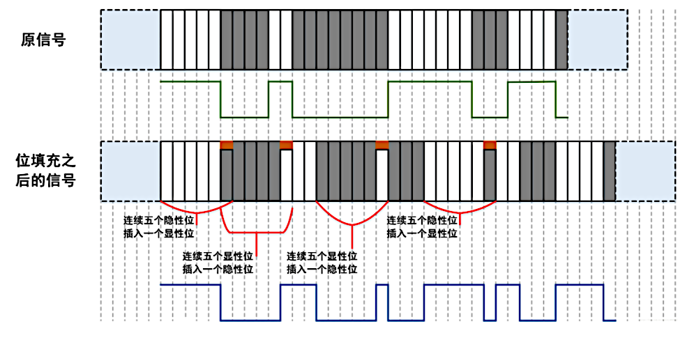
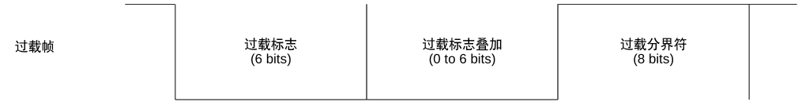
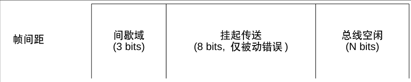
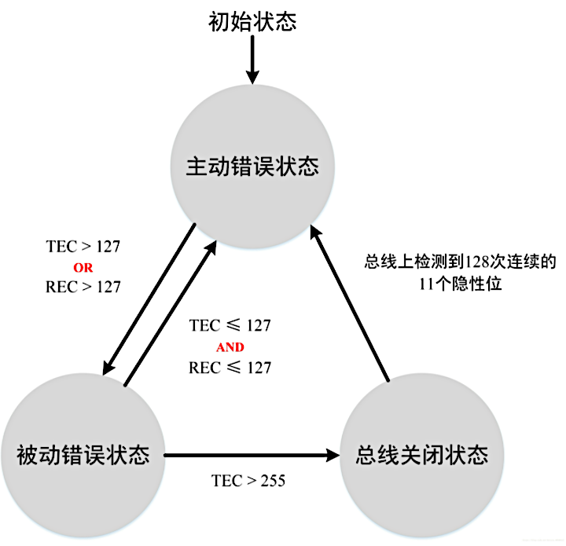

CAN 基础
拓扑结构

CAN总线有两个 ISO 国际标准：ISO11898 和 ISO11519。
- ISO11898 定义了通信速率为 125 Kbps～1 Mbps 的高速 CAN 通信标准，属于闭环总线，总线长度 ≤ 40 米。
- ISO11519 定义了通信速率为 10～125 Kbps 的低速 CAN 通信标准，属于开环总线，总线长度可达 1000 米。
- 在同一条总线上，所有节点的通信速度必须相同；如果两条不同通信速度的总线上的节点想要实现信息交互，必须通过网关或者中继器转发信息。
信号表示

通信特点
多主多从结构
- CAN 总线上的所有节点没有主从之分，在总线空闲状态，任意节点都可以向总线上发送消息
- 当总线上出现连续的 11 位隐形电平，那么总线就处于空闲状态
- 最先向总线发送消息的节点获得总线的发送权，当多个节点同时向总线发送消息时，所发送消息的优先级高的那个节点获得总线的发送权
- 依赖于硬件的验收滤波技术，CAN 总线可以实现一对一，一对多以及广播的数据传输方式。
非破坏性位仲裁机制
当多个节点同时向总线发送消息时，对各个消息的标识符（即ID号）进行逐位仲裁，如果某个节点发送的消息仲裁获胜，那么这个节点将获取总线的发送权，仲裁失败的节点则立即停止发送并转变为监听（接收）状态。
这种仲裁机制既不会造成已发送数据的延迟，也不会破坏已经发送的数据。
报文过滤
CAN 总线中没有地址的概念，CAN 总线是通过报文 ID 来实现收发数据的。每个节点上都会有一个验收滤波 ID 表，其位于 CAN 节点的验收滤波器中，如果总线上的报文的 ID 号在某个节点的验收滤波 ID 表中，那么这一帧报文就能通过该节点验收滤波器的验收，该节点就会接收这一帧报文。
远程数据请求
某个节点 Node_A 可以通过发送遥控帧到总线上的方式，请求某个节点 Node_B 来发送由该遥控帧所指定的报文。
出错处理
- 所有的节点都可以检测出错误
- 检测出错误的节点会立即通知总线上其它所有的节点
- 正在发送消息的节点，如果检测到错误，会立即停止当前的发送，同时不断地重复发送此消息，直到该消息发送成功为止
故障封闭
节点能够判断错误的类型，判断是暂时性的数据错误（如噪声干扰）还是持续性的数据错误（如节点内部故障），如果判断是严重的持续性错误，那么节点就会切断自己与总线的联系，从而避免影响总线上其他节点的正常工作。
位填充

CAN 协议中规定，当相同极性的电平持续五位时，则添加一个极性相反的位。
网络分层架构

帧结构
数据帧和遥控帧


- RTR(Remote Transmission Request) 位保证了数据帧的优先级高于遥控帧
- SRR(Substitutes Remote Requests) 位保证了标准数据帧的优先级高于扩展数据帧
- IDE(Identifier Extension) 位保证了标准遥控帧的优先级高于扩展遥控帧
- DLC(Data Length Code) 位指示了数据段中的字节数，对于遥控帧而言，DLC 表示该遥控帧对应的数据帧的数据段的字节数
- 数据段从 MSB 开始输出
- CRC 校验序列(15bit)的计算范围包括：SOF,仲裁段，控制段和数据段
- ACK 包括 ACK 槽和 ACK 分界符：
- 发送节点发出的报文中 ACK 槽为
隐性1 - 接收节点在接收到正确的报文之后会在 ACK 槽发送
显性0，通知发送节点正常接收结束
- 发送节点发出的报文中 ACK 槽为
- EOF(End Of Frame) 表示该帧报文的结束，由7个隐性位构成
错误帧
在 CAN 总线通信中，一共有五种错误，分别是：位错误、ACK错误、填充错误、CRC错误、格式错误。

- 主动错误标志：6个连续的显性位0
- 被动错误标志：6个连续的隐性位1
- 错误分界符：8个连续的隐性位1
过载帧

- 接受单元会发从此帧来通知总线自己还没有做好接收准备
帧间隔

- 数据帧和遥控帧可通过插入帧间隔将本帧与前面的任何帧（数据帧、遥控帧、错误帧、过载帧）分开，过载帧和错误帧前不能插入帧间隔
错误通知
节点错误状态
按照 CAN 协议的规定，CAN 总线上的节点始终处于以下三种状态之一：
-
主动错误状态
- 可以正常通信
- 在检测出错误时，发出主动错误标志
-
被动错误状态
- 可以正常通信
- 在检测出错误时，发出被动错误标志
-
总线关闭状态
- 节点不能收发报文
- 在满足一定条件的时候，再次进入到主动错误状态
错误状态的转换
在 CAN 节点内，有两个计数器：发送错误计数器（TEC）和接收错误计数器（REC）。TEC 和 REC 计数值的变化，是根据下表的规定来进行的

CAN节点错误状态的转换，就是基于这两个计数器来进行的

错误帧的发送

- 发送节点 Node_A 发送一个显性位，但是却从总线上听到一个隐形位，于是 Node_A 节点就会检测到一个位错误
- Node_A 检测到位错误之后，立即在下一位开始发送主动错误帧：6个连续显性位的主动错误标志+8个连续隐性位的错误界定符
- 对应 Node_A 发出的主动错误标志，总线上电平为6个连续显性位
- 接收节点 Node_B 和 Node_C 从总线上听到连续6个显性位，那么就会检测到一个填充错误，于是这两个节点都会发送主动错误帧
- 对应 Node_B 和 Node_C 发出的主动错误标志，总线电平又有6个连续显性电平，对应 Node_B 和 Node_C 发出的错误界定符，总线电平有8个连续的隐性电平
- 在间歇域之后，Node_A 节点重新发送刚刚出错的报文
Socket CAN
命令行工具
ip 命令
ip link set can0 type can help
设置 CAN 设备的波特率
ip link set can0 type can bitrate 500000
ip link set can0 type can bitrate 500000 dbitrate 2000000 fd on
ip link set can0 type can bitrate 500000 sample-point 0.875
启动/关闭 CAN 设备
ip link set can0 up
ip link set can0 down
设置 CAN 设备的模式
ip link set can0 type can loopback on
ip link set can0 type can listen-only on
查看详细的配置信息
ip -details link show can0
can-utils 程序
candump
candump can0,0x123:0x7FF # 仅显示can0上收到的ID为0x123的消息
cansend
cansend can0 123#1122334455667788 # 发送一个ID为0x123的报文
cangen
cangen can0 -g 0x123 -I 1000 -L 8 -D 0x1122334455667788 # 每1000ms发送一个ID为0x123的报文
cansniffer
cansniffer can0 # 抓取can0上的所有报文，可以过滤掉数据不变的帧
python-can
安装
pip install python-can
使用
# import the library
import can
# create a bus instance
# many other interfaces are supported as well (see documentation)
bus = can.Bus(interface='socketcan',
channel='vcan0',
receive_own_messages=True)
# send a message
message = can.Message(arbitration_id=123, is_extended_id=True,
data=[0x11, 0x22, 0x33])
bus.send(message, timeout=0.2)
# iterate over received messages
for msg in bus:
print(f"{msg.arbitration_id:X}: {msg.data}")
# or use an asynchronous notifier
notifier = can.Notifier(bus, [can.Logger("recorded.log"), can.Printer()])